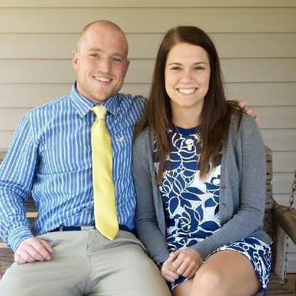

Jonathan and Taylor met in 6th grade at Currituck
County Middle School when they sat next to each other in English class. Jonathan was extremely
shy and Taylor was determined to get him to speak to her by the end of the school year. After
much prodding, she finally got her way when they were able to talk about a common interest,
Battle of the Books. They continued to make small talk and become friends throughout middle school
and in 9th grade, they both joined the Currituck Marching Knights. Jonathan played trumpet and
Taylor was in the colorguard. They spent a lot of time together during marching season and became
very close friends until eventually, they developed a crush on each other. Luckily, they had a
friend named Michelle that refused to let their feelings go unnoticed and declared them in a
relationship (though Jonathan did also bring her a Hershey kiss with a plume that said "Be Mine").
They dated for several months until marching band ended for the season and they "drifted apart". Although
they broke up, they still remained the best of friends over the next several years of high school and college.
Jonathan and Taylor met in 6th grade at Currituck
County Middle School when they sat next to each other in English class. Jonathan was extremely
shy and Taylor was determined to get him to speak to her by the end of the school year. After
much prodding, she finally got her way when they were able to talk about a common interest,
Battle of the Books. They continued to make small talk and become friends throughout middle school
and in 9th grade, they both joined the Currituck Marching Knights. Jonathan played trumpet and
Taylor was in the colorguard. They spent a lot of time together during marching season and became
very close friends until eventually, they developed a crush on each other. Luckily, they had a
friend named Michelle that refused to let their feelings go unnoticed and declared them in a
relationship (though Jonathan did also bring her a Hershey kiss with a plume that said "Be Mine").
They dated for several months until marching band ended for the season and they "drifted apart". Although
they broke up, they still remained the best of friends over the next several years of high school and college.

Jonathan and Taylor stayed best friends throughout their first years of college. Taylor was attending UNCW at the time and Jonathan was at NC State. During Christmas break of their sophomore year, Jonathan and Taylor spent a lot of time together with several groups of friends. During what seemed to be an average day with Taylor's best friend Mallory and Jonathan's best friend Tyler, Jonathan "made a move" on Taylor by putting his arm around her while watching the NCSU basketball game. Ultimately, this was the beginning of their soon-to-be relationship. They began "talking" and quickly developed feelings for each other as more than just each other's best friend. Jonathan and Taylor returned to school and came home two weeks later to go on their first real date. He asked Taylor to be his girlfriend that night, January 19, 2013. From then on, they were attached at the hip and fell more in love every day.
 For the next two years, Jonathan and Taylor spent as much time
together as they could. As many weekends as possible, Jonathan travelled to Greenville (as Taylor had
transferred to ECU) or Taylor drove to Raleigh to spend time together. They went on many dates and had lots
of fun times travelling and just being together. For their final spring break as college students, they
decided that they wanted to go on a trip. Taylor's aunt and uncle were planning a trip to Orlando, FL at about
the same time and offered for them to come along. Because Taylor had never been to Disney World, they decided
to visit! Little did Taylor know, Jonathan had more than just an average visit up his sleeve. He made reservations
for them to have breakfast with Winnie-the-Pooh (Taylor's favorite) much to her excitement! They attended the
breakfast and Jonathan said that they should go ahead and get a picture in front of the castle before the park
got too busy. Taylor handed her camera to the photographer and posed for what she didn't realize was "the decoy
picture". Jonathan then turned to Taylor and told her that in the happiest place on Earth, he would like her to
make him the happiest man on Earth. He got down on one knee and asked Taylor to be his wife and presented her with
the most beautiful ring she'd ever seen. Of course, she said yes!
For the next two years, Jonathan and Taylor spent as much time
together as they could. As many weekends as possible, Jonathan travelled to Greenville (as Taylor had
transferred to ECU) or Taylor drove to Raleigh to spend time together. They went on many dates and had lots
of fun times travelling and just being together. For their final spring break as college students, they
decided that they wanted to go on a trip. Taylor's aunt and uncle were planning a trip to Orlando, FL at about
the same time and offered for them to come along. Because Taylor had never been to Disney World, they decided
to visit! Little did Taylor know, Jonathan had more than just an average visit up his sleeve. He made reservations
for them to have breakfast with Winnie-the-Pooh (Taylor's favorite) much to her excitement! They attended the
breakfast and Jonathan said that they should go ahead and get a picture in front of the castle before the park
got too busy. Taylor handed her camera to the photographer and posed for what she didn't realize was "the decoy
picture". Jonathan then turned to Taylor and told her that in the happiest place on Earth, he would like her to
make him the happiest man on Earth. He got down on one knee and asked Taylor to be his wife and presented her with
the most beautiful ring she'd ever seen. Of course, she said yes!
The Bride

Taylor Dozier
Bio
The Groom

Jonathan Poston
Songs That Remind Me of Taylor
-
Summer Song By Wavorly
-
Best Thing By Relient K
-
Every Little Thing By Hawk Nelson
-
Perfect Chemistry By Nevertheless
-
I'm Taking You With Me By Relient K
Favorite Moment With Her
My favorite moment with Taylor is a really hard question. Of course our trip to Disney World was a really good time. But honestly anytime where we I get to make her laugh and smile is the new best day. I know it's cheesy but its the truth.
Quotes That Remind Me of Taylor
Bridesmaids

Mallory Miller Maid of Honor
Blah blah blah

Alexis Kovolenko
Blah blah blah

Angela Leahey
Blah blah blah

Anna Poston
Blah blah blah

Michelle Page
Blah blah blah
Groomsmen

Jon Poston Best Man
Blah blah blah

Thomas Poston Maid of Honor
Blah blah blah

Tyler Camden
Blah blah blah

Brandon Dozier
Blah blah blah

Bradley Cook
Blah blah blah